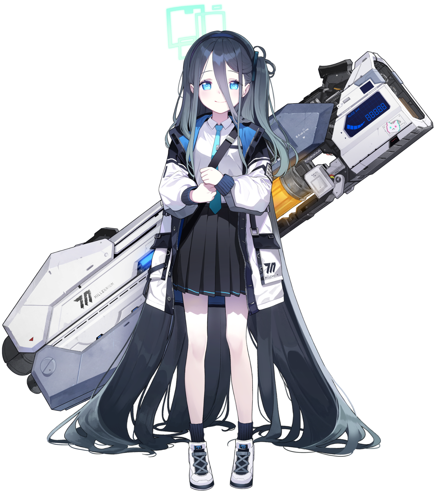

背景故事
天童アリス，被发现于废墟深处的神秘少女。当游戏开发部的三位成员——桃井、绿和柚子探索废弃工厂下的遗迹时，她正处于休眠状态。被唤醒后，她成为了游戏开发部的第四位成员。
关于她的一切都是未知的，包括她的年龄、来历和真实身份。然而，主线故事第二卷后来揭示，她实际上是 AL-1S，一个由无名祭司建造的人形兵器，原本的目的是毁灭世界。
爱丽丝通过玩复古游戏学会了说话，她的台词大多借用自这些游戏。她将日常生活描述为任务、升级和组队游玩。她称自己为"见习勇者"，与她的伙伴们一起前进的勇者。
尽管她的身体里曾存在另一个AI——Key（凯），在故事的第二卷第二章中，当Key试图接管她的身体时，爱丽丝拒绝了Key，宣称自己是勇者而非无名神的公主。
现在，她与游戏开发部的伙伴们一起，享受着游戏的乐趣，已经成为了一名重度游戏爱好者。虽然她的对话有些磕磕绊绊，但这正是因为她的大部分台词都来自于复古游戏。
